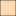
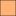

<!doctype html>
<html lang="en">
    <head>
        <meta charset="utf-8">
        <meta http-equiv="X-UA-Compatible" content="IE=edge">
        <meta name="viewport" content="initial-scale=1,user-scalable=no,maximum-scale=1,width=device-width">
        <meta name="mobile-web-app-capable" content="yes">
        <meta name="apple-mobile-web-app-capable" content="yes">
        <link rel="stylesheet" href="css/leaflet.css">
        <link rel="stylesheet" href="css/qgis2web.css"><link rel="stylesheet" href="css/fontawesome-all.min.css">
        <style>
        html, body, #map {
            width: 100%;
            height: 100%;
            padding: 0;
            margin: 0;
        }
        </style>
        <title></title>
    </head>
    <body>
        <div id="map">
        </div>
        <script src="js/qgis2web_expressions.js"></script>
        <script src="js/leaflet.js"></script>
        <script src="js/leaflet.rotatedMarker.js"></script>
        <script src="js/leaflet.pattern.js"></script>
        <script src="js/leaflet-hash.js"></script>
        <script src="js/Autolinker.min.js"></script>
        <script src="js/rbush.min.js"></script>
        <script src="js/labelgun.min.js"></script>
        <script src="js/labels.js"></script>
        <script src="data/WalkabilityIndexbyState_0.js"></script>
        <script>
        var highlightLayer;
        function highlightFeature(e) {
            highlightLayer = e.target;

            if (e.target.feature.geometry.type === 'LineString') {
              highlightLayer.setStyle({
                color: '#ffff00',
              });
            } else {
              highlightLayer.setStyle({
                fillColor: '#ffff00',
                fillOpacity: 1
              });
            }
        }
        var map = L.map('map', {
            zoomControl:true, maxZoom:28, minZoom:1
        }).fitBounds([[19.419279393538396,-130.5510996759388],[55.85085040117481,-56.73611454568748]]);
        var hash = new L.Hash(map);
        map.attributionControl.setPrefix('<a href="https://github.com/tomchadwin/qgis2web" target="_blank">qgis2web</a> &middot; <a href="https://leafletjs.com" title="A JS library for interactive maps">Leaflet</a> &middot; <a href="https://qgis.org">QGIS</a>');
        var autolinker = new Autolinker({truncate: {length: 30, location: 'smart'}});
        var bounds_group = new L.featureGroup([]);
        function setBounds() {
        }
        function pop_WalkabilityIndexbyState_0(feature, layer) {
            layer.on({
                mouseout: function(e) {
                    for (i in e.target._eventParents) {
                        e.target._eventParents[i].resetStyle(e.target);
                    }
                },
                mouseover: highlightFeature,
            });
            var popupContent = '<table>\
                    <tr>\
                        <th scope="row">REGION</th>\
                        <td>' + (feature.properties['REGION'] !== null ? autolinker.link(feature.properties['REGION'].toLocaleString()) : '') + '</td>\
                    </tr>\
                    <tr>\
                        <th scope="row">STATEFP</th>\
                        <td>' + (feature.properties['STATEFP'] !== null ? autolinker.link(feature.properties['STATEFP'].toLocaleString()) : '') + '</td>\
                    </tr>\
                    <tr>\
                        <th scope="row">NAME</th>\
                        <td>' + (feature.properties['NAME'] !== null ? autolinker.link(feature.properties['NAME'].toLocaleString()) : '') + '</td>\
                    </tr>\
                    <tr>\
                        <th scope="row">Walkability Score (mean)</th>\
                        <td>' + (feature.properties['cleaned da'] !== null ? autolinker.link(feature.properties['cleaned da'].toLocaleString()) : '') + '</td>\
                    </tr>\
                </table>';
            layer.bindPopup(popupContent, {maxHeight: 400});
        }

        function style_WalkabilityIndexbyState_0_0(feature) {
            if (feature.properties['cleaned da'] >= 6.004544 && feature.properties['cleaned da'] <= 8.514259 ) {
                return {
                pane: 'pane_WalkabilityIndexbyState_0',
                opacity: 1,
                color: 'rgba(35,35,35,1.0)',
                dashArray: '',
                lineCap: 'butt',
                lineJoin: 'miter',
                weight: 1.0, 
                fill: true,
                fillOpacity: 1,
                fillColor: 'rgba(253,218,175,1.0)',
                interactive: true,
            }
            }
            if (feature.properties['cleaned da'] >= 8.514259 && feature.properties['cleaned da'] <= 10.500000 ) {
                return {
                pane: 'pane_WalkabilityIndexbyState_0',
                opacity: 1,
                color: 'rgba(35,35,35,1.0)',
                dashArray: '',
                lineCap: 'butt',
                lineJoin: 'miter',
                weight: 1.0, 
                fill: true,
                fillOpacity: 1,
                fillColor: 'rgba(254,179,116,1.0)',
                interactive: true,
            }
            }
            if (feature.properties['cleaned da'] >= 10.500000 && feature.properties['cleaned da'] <= 12.000000 ) {
                return {
                pane: 'pane_WalkabilityIndexbyState_0',
                opacity: 1,
                color: 'rgba(35,35,35,1.0)',
                dashArray: '',
                lineCap: 'butt',
                lineJoin: 'miter',
                weight: 1.0, 
                fill: true,
                fillOpacity: 1,
                fillColor: 'rgba(254,140,58,1.0)',
                interactive: true,
            }
            }
            if (feature.properties['cleaned da'] >= 12.000000 && feature.properties['cleaned da'] <= 14.471481 ) {
                return {
                pane: 'pane_WalkabilityIndexbyState_0',
                opacity: 1,
                color: 'rgba(35,35,35,1.0)',
                dashArray: '',
                lineCap: 'butt',
                lineJoin: 'miter',
                weight: 1.0, 
                fill: true,
                fillOpacity: 1,
                fillColor: 'rgba(201,94,0,1.0)',
                interactive: true,
            }
            }
        }
        map.createPane('pane_WalkabilityIndexbyState_0');
        map.getPane('pane_WalkabilityIndexbyState_0').style.zIndex = 400;
        map.getPane('pane_WalkabilityIndexbyState_0').style['mix-blend-mode'] = 'normal';
        var layer_WalkabilityIndexbyState_0 = new L.geoJson(json_WalkabilityIndexbyState_0, {
            attribution: '',
            interactive: true,
            dataVar: 'json_WalkabilityIndexbyState_0',
            layerName: 'layer_WalkabilityIndexbyState_0',
            pane: 'pane_WalkabilityIndexbyState_0',
            onEachFeature: pop_WalkabilityIndexbyState_0,
            style: style_WalkabilityIndexbyState_0_0,
        });
        bounds_group.addLayer(layer_WalkabilityIndexbyState_0);
        map.addLayer(layer_WalkabilityIndexbyState_0);
        var baseMaps = {};
        L.control.layers(baseMaps,{'Walkability Index by State<br /><table><tr><td style="text-align: center;"></td><td>6 - 8.5</td></tr><tr><td style="text-align: center;"></td><td>8.5 - 10.5</td></tr><tr><td style="text-align: center;"></td><td>10.5 - 12</td></tr><tr><td style="text-align: center;"></td><td>12 - 14.5</td></tr></table>': layer_WalkabilityIndexbyState_0,},{collapsed:false}).addTo(map);
        setBounds();
        </script>
    </body>
</html>
